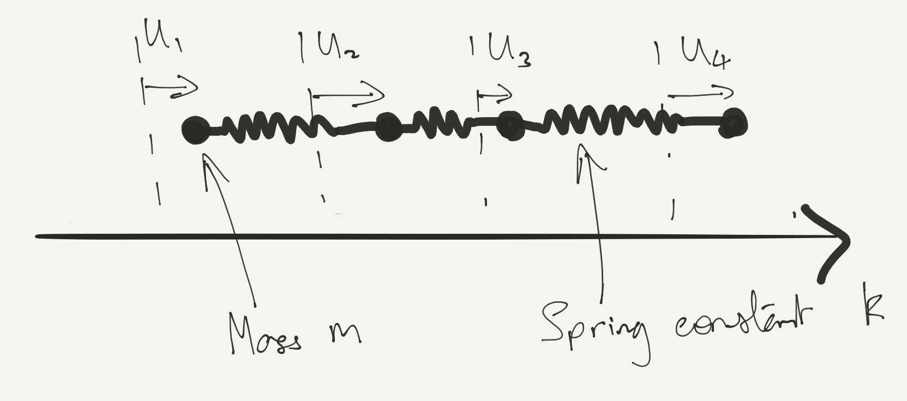
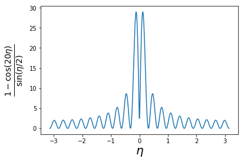
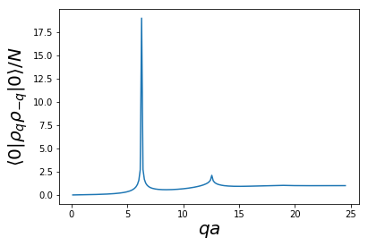

The Elastic Chain
\[ \DeclareMathOperator{\tr}{tr} \DeclareMathOperator{\E}{\mathbb{E}} \]
In this lecture we discuss a very simple many body system in which particles are coupled by Hooke’s Law springs. Nevertheless, the quantization of this system has a lot to teach us about the appearance of collective excitations.
Reading: Coleman (2015), Chapter 2.
1 The Classical System
We study a chain of equal masses connected by springs, moving only in one dimension, along the chain. The Hamiltonian is

\[ H = \sum_{j=1}^N \left[\frac{p_j^2}{2m} + \frac{k}{2} (u_j-u_{j+1})^2 \right]. \tag{1}\]
We identify \(u_j=u_{N+j}\), corresponding to periodic boundary conditions. As usual \([u_i,p_j]=i\delta_{ij}\). To orient ourselves, we solve the classical version of the problem.
1.1 Equations of Motion
You’ve seen this before. The equations of motion are
\[ m \ddot u_j = k(u_{j-1} + u_{j+1} - 2u_j). \]
We look for oscillatory solutions with time dependence \(u_j(t) = u_j e^{-i\omega t}\), arriving at the matrix eigenvalue problem
\[ -\omega^2 \begin{pmatrix} u_1 \\ u_2 \\ \cdots \\ u_{N-1}\\ u_N \end{pmatrix} = \frac{k}{m} \begin{pmatrix} -2 & 1 & 0 & \cdots & 1 \\ 1 & -2 & 1 & \cdots & 0\\ \cdots & \cdots & \cdots & \cdots & \cdots \\ 0 & \cdot & 1 & -2 & 1\\ 1 & 0 & \cdots & 1 & -2 \end{pmatrix} \begin{pmatrix} u_1 \\ u_2 \\ \cdots \\ u_{N-1}\\ u_N \end{pmatrix} \]
Matrices of this type are called circulant matrices, and arise here because of the translational invariance of the system (including the periodic boundary conditions). Their eigenvectors are given by plane waves \(u_j = (z_n)^j\), where \(z_n\) is one of the \(N^\text{th}\) roots of unity i.e. \(z^N = 1\) or
\[ z_n = \exp\left(\frac{2\pi i n}{N}\right),\qquad n = 0,\ldots, N-1. \]
In fact, to make things a bit more symmetrical, let’s take \(N\) to be odd and index the \(z_n\) using both positive and negative values of \(n\)
\[ z_n = \exp\left(\frac{2\pi i n}{N}\right),\qquad n = -(N-1)/2,\ldots, (N-1)/2. \]
We’ll write \(\eta_n\equiv \frac{2\pi n}{N}\), so that the eigenstates have the form \(u_j=\exp(i\eta_n j)\).
By substituting into the equation of motion show that the dispersion relation is \[ \omega(\eta) = \sqrt{\frac{4k}{m}}\left|\sin\eta/2\right|. \tag{2}\]
Notice that:
- The frequency vanishes at \(\eta\to 0\). This mode corresponds to translation of the system, for which there is no restoring force.
- At small \(\eta\) the dispersion is linear, as we would expect for sound waves.
A general motion of the system can be represented as a superposition of the normal modes \[ u_j(t) = \frac{1}{\sqrt{N}}\sum_{|n| \leq (N-1)/2} q_n(t) e^{i\eta_n j}, \label{coll_modes} \] together with the condition \(q_{-n}=q^*_n\) on the complex amplitudes to ensure that \(u_j\) is real. The amplitudes \(q_n(t)\) have time dependence \[ q_n(t) = \alpha_n e^{-i\omega(\eta_n) t} + \beta_n e^{i\omega(\eta_n) t} \] for \(n\neq 0\), while for \(n=0\) \[ q_0(t) = \sqrt{N}(X+Vt) \] describes the motion of the centre of mass.
1.2 Hamiltonian Formulation
To make contact with quantum physics, let’s look at this problem from the Hamiltonian perspective. If the \(q_n\) are to be our canonical coordinates, then we should likewise write the momenta in terms of Fourier modes \[ p_j(t) = \frac{1}{\sqrt{N}}\sum_{|n| \leq (N-1)/2} \pi_n(t) e^{-i\eta_n j}, \tag{3}\] If \(u_j\), \(p_j\) are canonical variables with Poisson Bracket \(\{u_j, p_k\}=\delta_{jk}\), then it follows that \(\{q_m,\pi_n\}=\delta_{mn}\).
Show that in terms of the Fourier modes the Hamiltonian Equation 1 is \[ H = \sum_{|n| \leq (N-1)/2} \left[\frac{1}{2m}\pi_n \pi_{-n} + k (1-\cos \eta_n) q_n q_{-n}\right]. \tag{4}\]
This almost looks like a system of harmonic oscillators. Bear in mind that the \(q_n\) and \(\pi_n\) are complex. One could, for example, split the amplitudes into their real and imaginary parts \[ \begin{align} q_n &= \frac{1}{\sqrt{2}}\left(q_n' + i q_n''\right),\quad q_{-n} = \frac{1}{\sqrt{2}}\left(q_n' - i q_n''\right)\\ \pi_n &= \frac{1}{\sqrt{2}}\left(\pi_n' + i \pi_n''\right),\quad \pi_{-n} = \frac{1}{\sqrt{2}}\left(\pi_n' - i \pi_n''\right),\quad n\geq 0. \end{align} \tag{5}\] The Hamiltonian would then become \(H=H' + H''\) with \[ H' = \sum_{0 < n \leq (N-1)/2} \left[\frac{1}{2m}\pi'_n \pi'_{n} + k (1-\cos \eta_n) q'_n q'_{n}\right]. \] and similarly for \(H''\). By comparing with the standard form \[ H_\text{SHO} = \frac{p^2}{2m} + \frac{1}{2}m\omega^2 x^2, \tag{6}\] we can read off the dispersion relation Equation 2. The decomposition Equation 5 amounts to working with the real amplitudes of sine and cosine waves. Other options are possible.
1.3 Complex Coordinates
Sticking with the classical problem, let’s introduce complex coordinates to describe the two dimensional phase space of a single oscillator \[ \begin{equation} a = \sqrt{\frac{m\omega}{2}}\left(x + \frac{i}{m\omega} p \right). \end{equation} \tag{7}\] \(a\) and its conjugate satisfy \(\{a^{},a^*\}=-i\). This definition is chosen so that the Hamiltonian takes the simple form \[ H = \omega \left|a\right|^2. \] Hamilton’s equations of motion are then \[ \begin{align} \dot a &= \{a, H \} = -i\omega a\\ \dot a^* &= \{a^*, H \} = i\omega a^*. \end{align} \] with solution \(a(t) = e^{-i\omega t} a(0)\) describing circular motion in the complex \(a\) plane on a contour of fixed energy.
Satisfy yourself — without doing any calculations — that \(a(t)\) defined by Equation 7 goes clockwise in the complex plane.
In the same way, we can introduce the coordinates \[ \begin{align} a_n &= \sqrt{\frac{m\omega(\eta_n)}{2}}\left(q_n + \frac{i}{m\omega(\eta_n)}\pi_{-n}\right)\nonumber\\ a^*_n &= \sqrt{\frac{m\omega(\eta_n)}{2}}\left(q_{-n} - \frac{i}{m\omega(\eta_n)}\pi_{n}\right),\qquad n\neq 0. \end{align} \tag{8}\] Remember that \(q_n = q_{-n}^*\) and \(\pi_n = \pi_{-n}^*\) in order that \(u_j\) and \(p_j\) are real. Note that \(n=0\) is excluded because \(\omega(0)=0\). These coordinates satisfy \[ \{a_m,a^{*}_n\}=-i\delta_{mn}. \] Inverting the definition Equation 8 gives \[ \begin{align} q_n &= \sqrt{\frac{1}{2m\omega(\eta_n)}}\left(a_n + a_{-n}^*\right)\nonumber\\ \pi_n &= -i\sqrt{\frac{m\omega(\eta_n)}{2}}\left(a_{-n} - a_{n}^*\right), \end{align} \] and inserting into the Hamiltonian Equation 4 gives \[ H = \frac{\pi_0^2}{2m}+\sum_{\substack{n\neq 0 \\ |n| \leq (N-1)/2}} \omega(\eta_n) \left|a_n\right|^2, \] with the first term accounting for the (free) centre of mass.
2 Quantum Oscillators
In the quantum theory, the variables \(a^{\vphantom{\dagger}}\), \(a^\dagger\) satisfy \([a^{\vphantom{\dagger}},a^\dagger]=1\) and the Hamiltonian Equation 6 takes the form \[ H = \frac{\omega}{2}\left(a^\dagger a^{\vphantom{\dagger}}+a^{\vphantom{\dagger}}a^\dagger\right). \] Let’s remind ourselves how this formalism solves the problem of finding the eigenstates. The key observation is that \[ \begin{align} \left[a^{\vphantom{\dagger}}, H\right] &= \omega a^{\vphantom{\dagger}},\\ \left[a^\dagger, H\right] &= -\omega a^\dagger. \end{align} \] As a result, if \(\lvert{\psi}\rangle\) is an eigenstate of the Hamiltonian \[ H \lvert{\psi}\rangle = E \lvert{\psi}\rangle, \] then \(a^\dagger\lvert{\psi}\rangle\) is an eigenstate with energy \(E+\omega\) \[ H a^\dagger\lvert{\psi}\rangle = a^\dagger H \lvert{\psi}\rangle + [H, a^\dagger] \lvert{\psi}\rangle = \left(E+\omega\right)a^\dagger\lvert{\psi}\rangle. \] Similarly \(a\lvert{\psi}\rangle\) is an eigenstate with energy \(E-\omega\), unless \(\lvert{\psi}\rangle=\lvert{0}\rangle\), the ground state, in which case we must have \(a^{\vphantom{\dagger}}\lvert{0}\rangle=0\).
As a result, all states can be written as \[ \lvert{n}\rangle = \frac{1}{\sqrt{n!}}\left(a^\dagger\right)^n\lvert{0}\rangle. \] The factor of \(\frac{1}{\sqrt{n!}}\) normalizes the state. The ground state has energy \(E_0=\omega/2\).
2.1 The Quantum Chain
The quantization of the chain is then a piece of cake. We have a system of oscillator variables satisfying \([a^{\vphantom{\dagger}}_m,a^\dagger_n]=\delta_{mn}\), and writing the Hamiltonian Equation 4 in terms of these variables, paying attention to the order, gives \[ H = \frac{\pi_0^2}{2m}+\sum_{\substack{n\neq 0 \\ |n| \leq (N-1)/2}} \frac{\omega(\eta_n)}{2}\left(a^\dagger_na^{\vphantom{\dagger}}_n+a^{\vphantom{\dagger}}_na^\dagger_n\right). \] From now on we will ignore the centre of mass motion. Exactly the same logic as before tells us that a general energy eigenstate may be written \[ \lvert{\mathbf{N}}\rangle = \prod_{\substack{n\neq 0 \\ |n| \leq (N-1)/2}} \frac{\left(a^\dagger_n\right)^{N_n}}{\sqrt{N_n!}} \lvert{0}\rangle. \] The non-negative integers \(\mathbf{N}=\left(N_{(1-N)/2},\ldots, N_{-1}, N_{1}, \ldots N_{(N-1)/2}\right)\) describe the occupation numbers of the oscillators. This eigenstate has energy \[ E(\mathbf{N}) = E_0 + \sum_{\substack{n\neq 0 \\ |n| \leq (N-1)/2}} \omega(\eta_n) N_n, \] where the ground state energy is \[ E_0 = \frac{1}{2}\sum_{|n| \leq (N-1)/2} \omega(\eta_n). \tag{9}\]
2.2 Oscillator Quanta are Bosons!
A key moment in the birth of Quantum Field Theory was the realization that oscillator quanta are bosons, meaning that they can be identified with quantum particles having symmetric wavefunctions. We’ll see this in much more detail in later lectures. For the moment, let’s just note that both have a basis of states described in terms of the occupation numbers, which are non-negative integers. In the case of \(M\) bosons, those states were written in terms of the single particle wavefunctions \(\varphi_\alpha(\mathbf{r})\) of the bosons as \[ \Psi^{\text{S}}_{\alpha_{1}\alpha_{2}\cdots\alpha_{M}}(\mathbf{r}_1,\ldots,\mathbf{r}_M)=\sqrt{\frac{M!}{\prod_{\alpha}N_{\alpha}!}}\mathcal{S}\,\varphi_{\alpha_{1}}(\mathbf{r}_{1})\varphi_{\alpha_{2}}(\mathbf{r}_{2})\cdots\varphi_{\alpha_{M}}(\mathbf{r}_{M}), \] where \(\mathcal{S}=\frac{1}{M!}\sum_{P} P\) is the operation of symmetrization, and \(N_\alpha\) denotes the number of occurrences of \(\varphi_\alpha(\mathbf{r})\) in the product, so that \(M=\sum_\alpha N_\alpha\). It turns out that the Hilbert space spanned by these states is the same as that spanned by the states \(\lvert{\mathbf{N}}\rangle\), if the labels \(\alpha\) are identified with the momentum labels \(n\).
It’s important to note that these bosons are totally distinct from the original particles making up the chain. In fact, or original Hamiltonian Equation 1 doesn’t describe indistinguishable particles as written, as each particle is labelled by its position in the chain, with a particle only interacting with its two neighbours. Since the particles are assumed not to change places, there is no way of assigning statistics to their wavefunction.
2.3 Thermodynamic (\(N\to \infty\)) limit
In studying the properties of matter, we are usually interested in taking the limit of an infinite system, otherwise known as the \(N\to\infty\) or thermodynamic limit. At the very least, we expect the internal energy (as well as other thermodynamic potentials) to be an extensive quantity, meaning that it is proportional to the `size’ of the system, here measured by the number of sites. Thus we expect the limit \[ e_0 = \lim_{N\to \infty} \frac{E_0}{N} \] to exist. The separation of the \(\eta_n\) values is \(2\pi/N\), so as \(N\to\infty\) the sum in ground state energy Equation 9 can be replaced with an integral according to the rule \[ \sum_{|n| \leq (N-1)/2} \left(\cdots\right) \xrightarrow{N\to\infty} N \int_{-\pi}^\pi \frac{d\eta}{2\pi}\left(\cdots\right). \] The factor of \(N\) tells us that we have an extensive quantity, and \[ e_0 = \int_{-\pi}^\pi\frac{d\eta}{2\pi} \frac{\omega(\eta)}{2} = \sqrt{\frac{k}{2m}}\int_{-\pi}^\pi\frac{d\eta}{2\pi} \sqrt{1-\cos \eta}=\frac{2}{\pi}\sqrt{\frac{k}{m}}. \] Alternatively, we may treat the \(N\to \infty\) limit of the chain as a model of an elastic continuum of length \(L=aN\). Take \(m = \rho a\), where \(\rho\) is the mass per unit length (1D density). The 1D elastic modulus is \[ \kappa \equiv \frac{\text{tension}}{\text{strain}} = ka \] Then \(k/m = \kappa/(\rho a^2)\) and \[ \frac{E_0}{L} = \left(\frac{N}{L}\right)^2\frac{2}{\pi}\sqrt{\frac{\kappa}{\rho}}. \] The energy per unit length diverges as \(N\to\infty\). Thus the ground state energy of a continuous medium is infinite, on account of the infinite number of degrees of freedom it contains. This is only a problem if one insists on such a description: in practice (at least in condensed matter) there is always discreteness on the smallest scales.
Apart from the infinite ground state energy, the continuum limit of our harmonic system is perfectly well defined. Introducing a continuum displacement by \(u(x=ja)=u_j\), the potential energy can be written \[ V = \frac{k}{2} \sum_j^N (u_j-u_{j+1})^2 \xrightarrow{N\to\infty} \frac{\kappa}{2} \int_0^L dx\, \left[u'(x)\right]^2. \] If we define the momentum density at each point by \(\pi(x=ja) = p_j N/L\), then we find the continuum limit of the canonical commutation relations \[ \left[u(x),\pi(x')\right]=i\delta(x-x'), \] together with the kinetic energy \[ T = \sum_{j=1}^N \frac{p_j^2}{2m} = \frac{1}{2\rho}\int_0^L dx\,\left[\pi(x)\right]^2. \] Since we are taking the \(N\to\infty\) limit it’s convenient to define the Fourier modes slightly differently \[ u(x) = \sum_{n=-\infty}^\infty u_n e^{ik_n x}, \] where \(k_n =2\pi n/L\). Note that \(k_n x = \eta_n j\). We are recycling the notation \(u_n\) now that we have taken the limit.
If the momentum density \(\pi(x)\) is then written \[ \pi(x) = \lim_{N\to\infty} \frac{p_{j=xN/L}N}{L} =\frac{1}{L}\sum_{n=-\infty}^\infty \pi_n e^{-2\pi i nx /L}, \] (This differs from Equation 3 by \(\pi_n\to \pi_n/\sqrt{N}\).) we have \(\left[u_m,\pi_n\right]=\delta_{mn}\).
Our continuum Hamiltonian \(H= T+V\) is then written in Fourier components as \[ H = \sum_{n=-\infty}^\infty \left[\frac{1}{2\rho L} \pi_n\pi_{-n} + \frac{\kappa L k_n^2}{2} u_nu_{-n} \right]. \] We can now read off the dispersion relation \[ \omega(k) = c|k|, \] where \(c=\sqrt{\frac{\kappa}{\rho}}\) is the speed of sound. Note that the continuum limit has lead to a linear dispersion relation. This is reasonable: the lattice was the origin of the periodic dispersion relation Equation 2, and it has now disappeared.
Transcribing the definition of the oscillator variables Equation 8 gives \[ \begin{align} a_n &= \frac{1}{\sqrt{2}}\left[\sqrt{ZkL} u_n + \frac{i}{\sqrt{ZkL}}\pi_{-n}\right]\nonumber\\ a^*_n &= \frac{1}{\sqrt{2}}\left[\sqrt{ZkL} u_{-n} - \frac{i}{\sqrt{ZkL}}\pi_{n}\right]. \end{align} \] where \(Z\equiv\sqrt{\kappa\rho}\) is the impedance. After quantization, the Hamiltonian takes the form \[ H - E_0 = \sum_{n=-\infty}^\infty c\left|k_n\right|a^\dagger_na^{\vphantom{\dagger}}_n. \label{coll_excess} \] This expresses the energy above the ground state in terms of the occupancy of the oscillator modes.
2.4 Finite Temperature
At finite temperature \(T\) the occupancies of the modes have thermal averages given by the Bose occupation function \[ \langle N_n \rangle = n_\text{B}(\omega(\eta_n))\equiv \frac{1}{\exp\left(\beta\omega(\eta_n)\right)-1}, \tag{10}\] where \(\beta=\frac{1}{k_\text{B}T}\). The thermal average of the energy of excited states is then \[ \langle H - E_0 \rangle =\sum_{|n|\leq (N-1)/2} \omega(\eta_n)n_\text{B}(\omega(\eta_n)). \] This is finite, even in the \(N\to\infty\) limit, on account of the exponential tail of Equation 10. Remember that this was the problem that the quantum theory was introduced to solve. At low energies \(n_{\text{B}}(\omega) = \frac{1}{\beta\omega}\) and the contribution of each mode is \[ \omega n_\text{B}(\omega) \xrightarrow{\omega\to 0} k_\text{B}T, \] in agreement with the classical equipartition theorem. Were this result to apply at all energies the thermal energy density of a continuum at finite temperature would be infinite (the Ultraviolet Catastrophe). It is the existence of Planck’s constant, which appears in the dimensionless combination \(\hbar\beta\omega\) in the Bose occupation function, that allows this conclusion to be avoided.
2.5 Position Fluctuations
Classically, the ground state configuration of our elastic chain corresponds to a regular ‘crystalline’ arrangement of masses at separation \(a\), with all \(u_j=0\). Mass \(j\) and mass \(k\) are then separated by \((j-k)a + u_j-u_k = (j-k)a\). Quantum mechanically, \(u_j-u_k\) fluctuates, even in the ground state. For the notion of a crystal to make sense, these fluctuations should not be too large. Let’s evaluate them for the elastic chain.
We want to evaluate \[ \langle{0}\rvert\left(u_j-u_k\right)^2\lvert{0}\rangle. \label{coll_gsfluct} \] To do this, we write the displacements in terms of the oscillator variables, and then evaluate the expectation values in the ground state using the oscillator algebra. Recall that \[ u_j = \frac{1}{\sqrt{N}}\sum_{|n| \leq (N-1)/2} q_n e^{i\eta_n j}, \tag{11}\] and \[ q_n = \sqrt{\frac{1}{2m\omega(\eta_n)}}\left(a_n + a_{-n}^\dagger\right). \] To evaluate \(\eqref{coll_gsfluct}\), we write the two factors \((u_j-u_k)(u_j-u_k)\) in terms of the \(a^{\vphantom{\dagger}}_n\) and \(a^\dagger_n\). Contributions to the ground state expectation value arise from terms with \(a^{\vphantom{\dagger}}_n\) in the left factor and \(a^\dagger_n\) in the right for some \(n\). All other terms vanish. This gives \[ \begin{multline} \langle{0}\rvert\left(u_j-u_k\right)^2\lvert{0}\rangle \\ = \frac{1}{2mN} \sum_{|n| \leq (N-1)/2} \frac{1}{\omega(\eta_n)} \left[e^{i\eta_n j}- e^{i\eta_n k}\right]\left[e^{-i\eta_n j}- e^{-i\eta_n k}\right]. \end{multline} \] Taking the \(N\to\infty\) limit in the sum gives \[ \begin{multline} \langle{0}\rvert\left(u_j-u_k\right)^2\lvert{0}\rangle = \frac{1}{mN}\sum_{|n| \leq (N-1)/2} \frac{1-\cos\left(\eta_n[j-k]\right)}{\omega(\eta_n)}\\ = \frac{1}{m}\int_{-\pi}^\pi \frac{d\eta}{2\pi} \frac{1-\cos\left(\eta[j-k]\right)}{\omega(\eta)}. \end{multline} \tag{12}\] The dispersion relation Equation 2 makes this integral a little difficult.

When \(\left|j-k\right|\gg 1\), the integral is dominated by values of \(\left|j-k\right|^{-1}\lesssim\eta\lesssim \pi\). In this limit the dispersion can be linearized
\[ \omega(\eta) \sim \sqrt{\frac{k}{m}}|\eta|. \] Show that we then have
\[ \langle{0}\rvert\left(u_i-u_j\right)^2\lvert{0}\rangle \sim \frac{\ell_\text{osc}^2}{\pi} \log \left|i-j\right|,\qquad \text{ as } \left|i-j\right|\to\infty \tag{13}\]
where we have introduced \(\ell_\text{osc}=\left(km\right)^{-1/4}\), the natural length scale of an oscillator. If you find this derivation a bit vague, an evaluation of the integral Equation 12 is given in the Section 3.2.
The result Equation 13 shows that the uncertainty in the separation of two masses in the chain increases with their separation. This implies that the ground state of the chain is not a crystal, but more closely resembles a fluid. It turns out that this conclusion depends strongly on the dimensionality of the system. In higher dimensions, crystalline ground states do exist (thankfully).
2.6 Density Fluctuations
An alternative way of quantifying crystalline order is to consider the fluctuations of the density of particles, defined by \[ \rho(x) = \sum_{j=1}^N \delta_L(x-x_j), \] where \(x_j = ja + u_j\), and \(\delta_L(x)\) is an \(L\)-periodic version of the \(\delta\)-function, if we want to stick with a finite size system. Alternatively, we may consider the Fourier components \[ \rho_k = \sum_{j=1}^N\exp(-i k x_j). \] Rather than introducing separate notation for the Fourier components of \(f(x)\), it’s convenient to denote them by \(f_q\), so that \[ f(x) = \sum_{n=-\infty}^\infty f_{k_n} \exp(ik_n x), \qquad k_n = \frac{2\pi n}{L} \] In an ordered configuration \(x_j = ja\), we would have \[ \rho_{k_n} = \begin{cases} N & n = 0 \mod N \\ 0 & \text{ otherwise.} \end{cases} \] These peaks at values of \(k\) corresponding to multiples of \(\frac{2\pi}{a}\) are nothing but the Bragg peaks observed in a diffraction experiment, which translates the real space crystal arrangement into Fourier space. Note that an overall translation of lattice will just change the phase of the $ _k$, leaving \(\left|\rho_k\right|^2\) (proportional to the intensity measured in a diffraction experiment) unchanged.
How is this picture altered in the quantum mechanical ground state? Given the above comment, we should evaluate \[ \langle{0}\rvert \rho_q \rho_{-q} \lvert{0}\rangle = \sum_{j,k=1}^N \langle{0}\rvert \exp(iq[x_j-x_k])\lvert{0}\rangle. \tag{14}\] Upon substituting the mode expansion Equation 11 for the displacements, we are left to evaluate expressions of the form \[ \langle{0}\rvert \exp(\lambda a^{\vphantom{\dagger}}+ \mu a^\dagger)\lvert{0}\rangle. \]
Prove the Hadamard Lemma
\[ \begin{aligned} e^{A}B e^{-A} &= B + \left[A,B\right] + \frac{1}{2!}\left[A,\left[A,B\right]\right]+\frac{1}{3!}\left[A,\left[A,\left[A,B\right]\right]\right]+\ldots \\ &\equiv e^{\left[A,\cdot\right]}B, \end{aligned} \]
[Hint: Consider the differential equation in \(x\) obeyed by \(e^{xA}B e^{-xA}\)]
Show that the exponent can be written in a form with all occurrences of \(a^\dagger\) to the left of all \(a^{\vphantom{\dagger}}\) (this operation is called normal ordering; we will meet it again).
\[ \exp(\lambda a^{\vphantom{\dagger}}+ \mu a^\dagger) = \exp(\lambda \mu /2) \exp(\mu a^\dagger)\exp(\lambda a^{\vphantom{\dagger}}). \] [Hint: Consider the differential equations obeyed by \(F_1(s)=e^{s(A+B)}\) and \(F_2(s)=e^{sA}e^{sB}\)]
Use this result to show that
\[ \langle{0}\rvert \exp(\lambda a^{\vphantom{\dagger}}+ \mu a^\dagger)\lvert{0}\rangle = \exp(\lambda \mu /2). \]
Deploying this strategy for Equation 14 gives \[ \begin{equation} \begin{split} \langle{0}\rvert \rho_q \rho_{-q} \lvert{0}\rangle = \sum_{j,k=1}^N &\exp(iqa[j-k])\\ &\times\exp\left(-\frac{q^2}{2mN}\sum_{|n| \leq (N-1)/2} \frac{1-\cos\left(\eta_n[j-k]\right)}{\omega(\eta_n)}\right). \end{split} \end{equation} \]

The second exponent modifies the classical prediction of Bragg peaks. We have encountered the expression in exponent before in Equation 12. Taking the \(N\to\infty\) limit with \(\left\|j-k\right\|\gg 1\) as before, we find that in the vicinity of the first Bragg peak at \(q=2\pi/a\) the summand has the form \[ \exp(i\Delta q a[j-k])\, \left|j-k\right|^{-2\pi\ell_\text{osc}^2/a^2}, \] where \(\Delta q\) denotes the deviation of \(q\) from \(2\pi/a\). To find the dependence on \(\Delta q\)
This leads to the conclusion \[ \langle{0}\rvert \rho_q \rho_{-q} \lvert{0}\rangle \sim \left(\Delta q\right)^{-1+2\pi\ell_\text{osc}^2/a^2}. \]
What happens to the higher Bragg peaks?
Thus quantum fluctuations replace the Bragg peaks, an indicator of crystalline order, with power law divergences. These remnants of order diminish as \(\ell_\text{osc}/a\) increases, indicating larger quantum fluctuations. Again, things are different in higher dimensions: the Bragg peaks survive, albeit reduced in strength, at least for small fluctuations. It is possible, however, for quantum fluctuations to prevent crystallization in the ground state (i.e. at zero temperature). Such systems are called quantum liquids. Helium is the prototypical example: the low atomic mass and relatively weak interactions between atoms mean that quantum fluctuations are large.
3 Appendix
3.1 Fourier review
This is a good place to collect some facts about Fourier transforms. We start from the discrete Fourier transform (DFT), which is a change of basis in a finite dimensional space. This is what we used in discussing the chain. There are then two ways to pass to the infinite continuous case described by the Fourier transform.
3.1.1 Discrete Fourier Transform
For a vector \(x_j = 1,\ldots N\) (\(N\) taken to be odd), we define the DFT by \[ F_n = \sum_{j=1}^N f_j e^{-i\eta_n j}, \tag{15}\] where \(\eta_n\equiv \frac{2\pi n}{N}\), and \(n = -(N-1)/2,\ldots, (N-1)/2\). The key to inverting Equation 15 is the observation \[ \sum_{n=-(N-1)/2}^{(N-1)/2} e^{i\eta_n j} = \begin{cases} 0 & j\neq 0 \mod N\\ N & j = 0 \mod N. \end{cases} \tag{16}\]
Perhaps the slickest way to to see this is to observe that \[ z^N-1 = (z-1)(1 + z + z^2 +\cdots z^{N-1}) \] Can you fill in the rest of the argument?
This gives \[ f_j = \frac{1}{N}\sum_{n=-(N-1)/2}^{(N-1)/2} F_n e^{i\eta_n j}. \tag{17}\] A more democratic definition would have \(1/\sqrt{N}\) in both definitions Equation 15 and Equation 17. This would allow us to regard the DFT as a basis change to an orthonormal basis of vectors \(e^{(n)}_j = \frac{e^{i\eta_n j}}{\sqrt{N}}\), and both the DFT and its inverse would be unitary transformations.
3.1.2 \(N\to\infty\) limit
In this limit the \(\eta_n\) values become dense in the range \((-\pi,\pi]\), with separation \(\Delta \eta = 2\pi/N\), and we replace the sum in the inverse DFT Equation 17 by an integral according to the prescription \[ \sum_{|n| \leq (N-1)/2} \left(\cdots\right) \xrightarrow{N\to\infty} N \int_{-\pi}^\pi \frac{d\eta}{2\pi}\left(\cdots\right), \] giving \[ f_j = \int_{-\pi}^\pi \frac{d\eta}{2\pi}\,F(\eta) e^{i\eta j}. \]
3.1.3 \(N\to\infty\), with \(f_j = f(jL/N)\),
Alternatively, regard the \(N\to\infty\) limit as sampling a function \(f(x)\) ever more finely in the range (0,L]. Now it’s the DFT, rather than the inverse, that becomes an integral \[ \hat f(k) \equiv \int_0^L f(x) e^{-ik_n x}\,dx, \] where \(k_n =2\pi n/L\). Note that \(k_n x = \eta_n j\). The pair of transformations is now \[ \begin{align} \hat f_k &= \int_0^L f(x) e^{-ik_n x}\,dx\nonumber\\ f(x) &= \frac{1}{L}\sum_k \hat f_k e^{ik_n x} \end{align} \tag{18}\] This is the conventional form of the Fourier series for a function with period \(L\).
With this definition \(\hat f_k\) has an extra dimension of distance (on account of the integral), which gets removed by the \(1/L\) in the inverse transform.
The analog of the identity Equation 16 is \[ \frac{1}{L}\sum_k e^{ik x} = \delta_L(x), \] where \(\delta_L(x)\) is an \(L\)-periodic version of the \(\delta\)-function.
3.1.4 \(L\to\infty\)
Finally we arrive at the Fourier transform, where we take \(L\to\infty\), so that the inverse transform in Equation 18 becomes an integral too \[ \begin{align} \hat{f}(k) & = \int_{-\infty}^\infty f(x) e^{-ik_n x}\,dx\nonumber\\ f(x) &= \int_{-\infty}^\infty \hat f(k) e^{ik_n x}\,\frac{dk}{2\pi}. \label{coll_FTTrans} \end{align} \] My preference is for taking this limit at the last possible moment, that is, sticking with discrete Fourier sums for as long as possible. There are some good(ish) reasons for this
Writing \(\sum_k\) is easier than \(L\int \frac{dk}{2\pi}\), because the \(k_n = 2\pi n/L\) can be left implicit.
Leaving \(k\) as a subscript means we don’t need the tilde to distinguish \(f(x)\) and \(f_k\).
There are times where taking the limit leads to a divergent integral, while the sums remain finite. This almost always tells us that there is something interesting going on when we are trying to pass to an infinite system.
3.1.5 Properties of the Fourier Transform
Here are some properties that hold for all of the above.
If \(f(x)\) is real \(f_k = \left[f_{-k}\right]^*\).
If \(f(x)\) is even, \(f_k\) is even.
(Ergo) if \(f(x)\) is real and even, so is \(f_k\).
3.1.6 Fourier Transforms of Products
Frequently we have to transform products, so we use the convolution theorem \[ f(x)g(x) = \frac{1}{L^2}\sum_{k,k'} f_k g_k = \frac{1}{L}\sum_q \left(\frac{1}{L}\sum_k f_k g_{q-k} \right)e^{iqx}, \] which shows us that \[ f(x)g(x) \stackrel{\text{FT}}{\longleftrightarrow} \frac{1}{L}\sum_k f_k g_{q-k}, \] the latter being a discrete convolution.
Frequently we’ll have to calculate integrals of such products. I record some examples to give you the general idea \[ \begin{align} \int_{0}^L f(x)g(x)\,dx &= \frac{1}{L}\sum_k f_k g_{-k}\nonumber\\ \int_{0}^L f'(x)g'(x)\,dx &= \frac{1}{L}\sum_k k^2 f_k g_{-k}\nonumber\\ \int_{0}^L f(x)g(x)h(x)\,dx &= \frac{1}{L^2}\sum_{\substack{k_1,k_2,k_3 \\ k_1+k_2+k_3=0}} f_{k_1} g_{k_2} h_{k_3}\nonumber\\ \int_0^\infty \phi(x)V(x-y)\phi(y)\,dx \,dy &= \frac{1}{L}\sum_{q} \phi_{-q} V_q \phi_q \end{align} \tag{19}\] Note that you can be guided to the right number of factors of \(1/L\) by dimensional considerations, or from the number of ‘free’ sums over wavevectors.
Finally, we often encounter the situation where we have two (or more) arguments, but there is only dependence on the difference, for example \[ F(x,x') = f(x-x'). \] In this case \[ F_{k,k'} = f_k\delta_{k,-k'}. \] In the \(L\to\infty\) limit this is \[ \hat F(k,k') = \hat f(k) (2\pi)\delta(k+k'). \] \((2\pi)\delta(k+k')\) is the \(L\to\infty\) limit of \(L\delta_{k,-k'}\) as \[ \frac{1}{L}\sum_k L\delta_k \xrightarrow{L\to\infty} \int_{-\infty}^\infty \frac{dk}{2\pi} 2\pi \delta(k) \] With practice, you will find you are able to write down the right hand sides of expressions like Equation 19 without too much difficulty.
3.1.7 Higher dimensions
This all generalizes to higher dimensions straightforwardly. For example \[ \frac{1}{L^d}\sum_\mathbf{k}(\cdots) \xrightarrow{L\to\infty} \int (\cdots) \frac{d\mathbf{k}}{(2\pi)^d} \]
Practice writing out Equation 19 in \(d\) dimensions.
3.2 Evaluating Equation 12
We want to evaluate \[ I(j)\equiv\int_{-\pi}^\pi \frac{1-\cos\left(\eta j\right)}{\sin(\eta/2)}d\eta \] for integer \(j\). We can write this as \[ I(j)=\int_{0}^{2\pi} \frac{1-e^{i\eta j}}{\sin(\eta/2)}d\eta= -2i\int_{0}^{2\pi} e^{i\eta/2}\frac{1-e^{i\eta j}}{1-e^{i\eta}}d\eta \] because the imaginary part of the integrand vanishes on integration. Now notice that the integrand involves the geometric series \[ \frac{1-e^{i\eta j}}{1-e^{i\eta}} = 1 + e^{i\eta} + \cdots e^{i\eta(j-1)}, \] so we can do the integrals term by term to give \[ I(j) = 4\sum_{n=1}^j \frac{1}{n+1/2}\sim 4\log j. \] When all factors are replaced, this yields Equation 13.